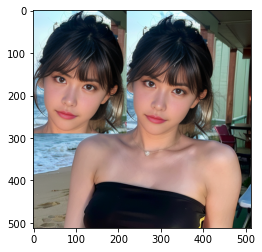
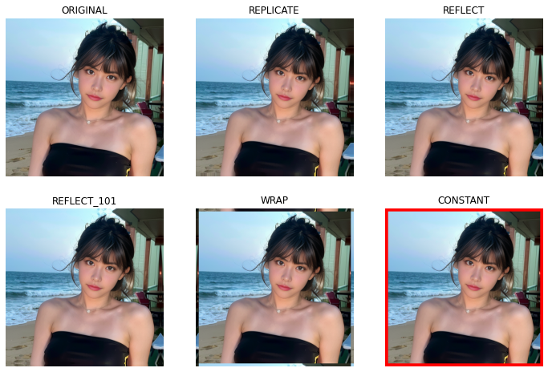
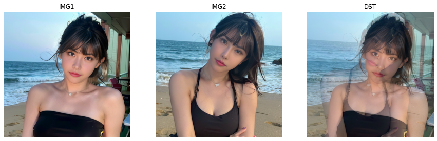

图像入门
读取图像
使用cv2.imread(filename,flags)函数读取图像，参数说明如下：
-
filename - 待读取图像的路径
-
flags - 读取图像的方式
- cv2.IMREAD_COLOR - 加载彩色图像，图像的透明度会被忽略，默认标志
- cv2.IMREAD_GRAYSCALE - 以灰度模式加载图像
- cv2.IMREAD_UNCHANGED - 加载图像，不会忽略透明度
可以分别传递整数1，0，-1
import numpy as np
import cv2
img = cv2.imread('face.png',0)
即使图像路径错误，也不会报错，但
print(img)会输出None
写入图像
使用cv2.imwrite(filename,image)函数保存图像，参数说明如下：
- filename - 保存的文件名
- image - 要保存的图像
cv2.imwrite('save.png', img)
使用Matplotlib显示图像
from matplotlib import pyplot as plt
plt.imshow(img, cmap = 'gray', interpolation = 'bicubic')
plt.xticks([]), plt.yticks([]) # 隐藏 x 轴和 y 轴上的刻度值
plt.show()
图像的基本操作
访问和修改像素值
可以通过行列坐标来访问和修改像素值。对于BGR图像，返回一个[BLUE值 GREEN值 RED值]数组；对于灰度图像，只返回对应的灰度。
>>> px=img[100,100]
>>> print(px)
[237 217 186]
# 访问BLUE值
>>> blue = img[100,100,0]
>>> print(blue)
237
>>> img[100,100]=[255,255,255]
>>> print(img[100,100])
[255 255 255]
上述方法用于选择数组的区域。对于单像素访问，Numpy数组方法array.item()和array.itemset()返回标量，相对更好。
>>> img.item(100,100,2)
255
>>> # 修改RED值
>>> img.itemset((10,10,2),99)
>>> img.item(10,10,2)
99
访问图像属性
图像属性包括行列通道数，数据类型和像素数等。
图像的形状由img.shape访问，返回行列通道数的元组，如果图像是灰度的，返回值仅包括行列数。
像素总数由img.size访问，图像数据类型由img.dtype访问。
>>> print('shape:',img.shape)
shape: (512, 512, 3)
>>> print('size:',img.size)
size: 786432
>>> print('dtype:',img.dtype)
dtype: uint8
img.dtype在调试时很重要，因为OpenCV代码中的大量错误是由无效的数据类型引起的。
图像感兴趣区域(Region of Interest, ROI)
用Numpy获取ROI，例如将图像中的人脸复制到图像的另一个区域
>>> face = img[10:300,210:430]
>>> img[0:290,0:220]=face

拆分和合并图像通道
有时候需要分别处理图像的B, G, R通道，或者将单独的通道加入到BGR图像，在这种情况下需要拆分或合并图像通道。
>>> b,g,r=cv2.split(img)
>>> img=cv2.merge((b,g,r))
或者采用Numpy索引，例如将所有红色值设置为零：
>>> img[:,:,2]=0
cv2.split()是一个耗时的操作，非必要时使用Numpy索引。
为图像设置边框（填充）
可以使用copyMakeBorder(src, top, bottom, left, right, borderType[, dst[, value]]) -> dst在图像周围创建边框，该函数在卷积运算，零填充等方面有更多应用。参数说明如下：
- src - 输入图像
- top, bottom, left, right - 边界宽度
- borderType - 边框类型标志，可以是一下类型：
- cv2.BORDER_CONSTANT - 添加恒定的彩色边框，该值由下一个参数给出
- cv2.BORDER_REFLECT - 边框是边框元素的镜像
- cv2.BORDER_REFLECT_101或cv2.BORDER_DEFAULT与上述相同，但略有变化
- cv2.BORDER_REPLICATE - 最后一个元素被复制
- cv2.BORDER_WRAP
- value - 边框的颜色，如果边框类型为cv2.BORDER_CONSTANT
import cv2
import numpy as np
from matplotlib import pyplot as plt
BLUE = [255,0,0]
img1 = cv2.imread('face.png')
img1 = cv2.cvtColor(img1, cv2.COLOR_BGR2RGB)
replicate = cv2.copyMakeBorder(img1,10,10,10,10,cv2.BORDER_REPLICATE)
reflect = cv2.copyMakeBorder(img1,10,10,10,10,cv2.BORDER_REFLECT)
reflect101 = cv2.copyMakeBorder(img1,10,10,10,10,cv2.BORDER_REFLECT_101)
wrap = cv2.copyMakeBorder(img1,10,10,10,10,cv2.BORDER_WRAP)
constant= cv2.copyMakeBorder(img1,10,10,10,10,cv2.BORDER_CONSTANT,value=BLUE)
plt.subplot(231),plt.imshow(img1,'gray'),plt.title('ORIGINAL')
plt.subplot(232),plt.imshow(replicate,'gray'),plt.title('REPLICATE')
plt.subplot(233),plt.imshow(reflect,'gray'),plt.title('REFLECT')
plt.subplot(234),plt.imshow(reflect101,'gray'),plt.title('REFLECT_101')
plt.subplot(235),plt.imshow(wrap,'gray'),plt.title('WRAP')
plt.subplot(236),plt.imshow(constant,'gray'),plt.title('CONSTANT')
plt.show()

图像上的运算
图像加法
可以通过cv2.add()或Numpy操作res=img1+img2完成图像加法操作。相加的图像应该具有相同的深度和类型，或者第二个图像是一个标量值。
OpenCV加法是饱和运算，Numpy加法是模运算。
>>> x=np.uint8([250])
>>> y=np.uint8([10])
>>> print(cv2.add(x,y))
[[255]]
>>> print(x+y)
[4]
当添加两个图像时，尽量使用OpenCV的功能，能提供更好的结果。
图像融合
这也是图像加法，但是对相加的图像赋予给定的权重，使其具有融合或透明的感觉。
$$ G(x)=(1-\alpha)f_0(x)+\alpha f_1(x) $$
将$\alpha$从$0\rightarrow1$更改，可以实现图像过渡的效果。cv2.addWeighted()在图像上应用以下公式：
$$ dst=\alpha\cdot img_1+\beta\cdot img_2+\gamma $$
在这里，$\gamma$ 被视为零。
img1 = cv2.imread('face1.png')
img1 = cv2.cvtColor(img1, cv2.COLOR_BGR2RGB)
img2 = cv2.imread('face2.png')
img2 = cv2.cvtColor(img2, cv2.COLOR_BGR2RGB)
dst = cv2.addWeighted(img1,0.6,img2,0.4,0)
plt.figure(figsize=(15, 9))
plt.subplot(131),plt.imshow(img1),plt.title('IMG1')
plt.axis('off')
plt.subplot(132),plt.imshow(img2),plt.title('IMG2')
plt.axis('off')
plt.subplot(133),plt.imshow(dst),plt.title('DST')
plt.axis('off')
plt.show()

按位运算
按位运算包括AND,OR,NOT,XOR操作。这些操作在提取图像的任意部分、定义和处理非矩形ROI方面非常有用。下面的例子是想把OpenCV的标志放到一个图像上。
如果我们直接使用图像加法，它会改变颜色，无法达到我们想要的效果；如果使用图像融合，会得到一个透明的效果，也不是我们想要的效果。如果是一个矩形区域，我们可以使用ROI，但OpenCV的标志并不是矩形的，故可以用按位操作来实现：
# 加载两张图片
img1 = cv2.cvtColor(cv2.imread('shuyi.png'),cv2.COLOR_BGR2RGB)
img2 = cv2.cvtColor(cv2.imread('logo.jpg'),cv2.COLOR_BGR2RGB)
# 我想把logo放在左上角，所以我创建了ROI
rows,cols,channels = img2.shape
roi = img1[0:rows, 0:cols]
# 现在创建logo的掩码，并同时创建其相反掩码
img2gray = cv2.cvtColor(img2,cv2.COLOR_BGR2GRAY)
ret, mask = cv2.threshold(img2gray, 10, 255, cv2.THRESH_BINARY)
mask_inv = cv2.bitwise_not(mask)
# 现在将ROI中logo的区域涂黑
img1_bg = cv2.bitwise_and(roi,roi,mask = mask_inv)
# 仅从logo图像中提取logo区域
img2_fg = cv2.bitwise_and(img2,img2,mask = mask)
# 将logo放入ROI并修改主图像
dst = cv2.add(img1_bg,img2_fg)
img1[0:rows, 0:cols ] = dst
plt.figure(figsize=(9, 6))
plt.subplot(121),plt.imshow(mask,'gray'),plt.title('MASK')
plt.axis('off')
plt.subplot(122),plt.imshow(img1),plt.title('RESULT')
plt.axis('off')
plt.show()
在计算mask时用到了cv2.bitwise_not(src,dst=None,mask=None)函数，在计算前景和背景区域时用到了cv2.bitwise_and(src1,src2,dst=None,mask=None)，参数说明如下：
- src1 - 参与运算的图像
- src2 - 参与运算的图像
- dst - 可选运算结果输出数组
- mask - 可选操作掩码
threshold(src, thresh, maxval, type[, dst])->ret,dst函数的作用是将一幅灰度图二值化，参数说明如下：
-
src - 输入的灰度图
-
thresh - 阈值
-
maxval - 最大值
-
type - 阈值类型
阈值类型 灰度值大于阈值(val>threshold) 其他情况 cv2.THRESH_BINARY maxval 0 cv2.THRESH_BINARY_INV 0 maxval cv2.THRESH_TRUNC thresh 当前灰度值 cv2.THRESH_TOZERO 当前灰度值 0 cv2.THRESH_TOZERO_INV 0 当前灰度值
性能衡量和提升技术
使用OpenCV衡量性能
cv2.getTickCount()函数返回从参考时间到调用此函数时的时钟周期数，可以在函数执行前后调用它获得执行函数的时钟周期数。
cv2.getTickFrequency()函数返回时钟周期的频率或者每秒的时钟周期数。下列代码可以获得执行函数所用时间（以秒为单位）。
e1 = cv2.getTickCount()
# 你的执行代码
e2 = cv2.getTickCount()
time = (e2 - e1)/ cv2.getTickFrequency()
也可以使用两次
time.time()函数，取两次的差来获得函数所用时间。
OpenCV中的默认优化
OpenCV默认运行优化的代码。可以使用cv2.useOptimized()来检查是否启用优化，使用cv2.setUseOptimized(bool)来启用/禁用优化。
cv2.setUseOptimized(True)
print(cv2.useOptimized())
%timeit res = cv2.medianBlur(img1,59)
cv2.setUseOptimized(False)
print(cv2.useOptimized())
%timeit res = cv2.medianBlur(img1,59)
True
35 ms ± 2 ms per loop (mean ± std. dev. of 7 runs, 10 loops each)
False
36.5 ms ± 2.37 ms per loop (mean ± std. dev. of 7 runs, 10 loops each)
在IPython或者Jupyter中衡量性能
使用%timeit。实例如下：
x=5
z=np.uint8([5])
%timeit y=x**2
%timeit y=z*z
%timeit y=x**x
%timeit y=np.square(z)
273 ns ± 13.9 ns per loop (mean ± std. dev. of 7 runs, 1000000 loops each)
659 ns ± 37.2 ns per loop (mean ± std. dev. of 7 runs, 1000000 loops each)
334 ns ± 10.8 ns per loop (mean ± std. dev. of 7 runs, 1000000 loops each)
646 ns ± 48.1 ns per loop (mean ± std. dev. of 7 runs, 1000000 loops each)
可以看到，Python的标量操作比Numpy的标量操作快，对于包含一两个元素的运算，Python标量比Numpy数组好，当数组大小稍大时Numpy会占优势。
下面测试cv2.countNonZero()函数和np.count_nonzero()函数对于同一张图片的性能。
img = cv2.cvtColor(img1,cv2.COLOR_BGR2GRAY)
%timeit z=cv2.countNonZero(img)
%timeit z=np.count_nonzero(img)
13.5 µs ± 481 ns per loop (mean ± std. dev. of 7 runs, 100000 loops each)
23.2 µs ± 970 ns per loop (mean ± std. dev. of 7 runs, 10000 loops each)
可以看到OpenCV函数比Numpy函数快。
性能优化技术
- 尽量避免在Python中使用循环，特别是双重/三重循环等，因为它们本质上速度较慢。
- 最大程度地向量化算法/代码，因为Numpy和OpenCV针对向量运算进行了优化。
- 利用缓存一致性。
- 尽量不要复制数组，因为数组复制是一项代价昂贵的操作。